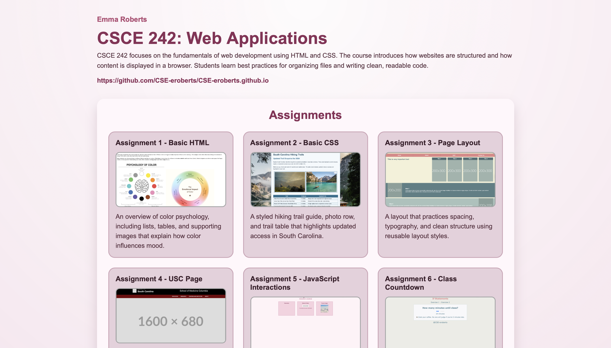
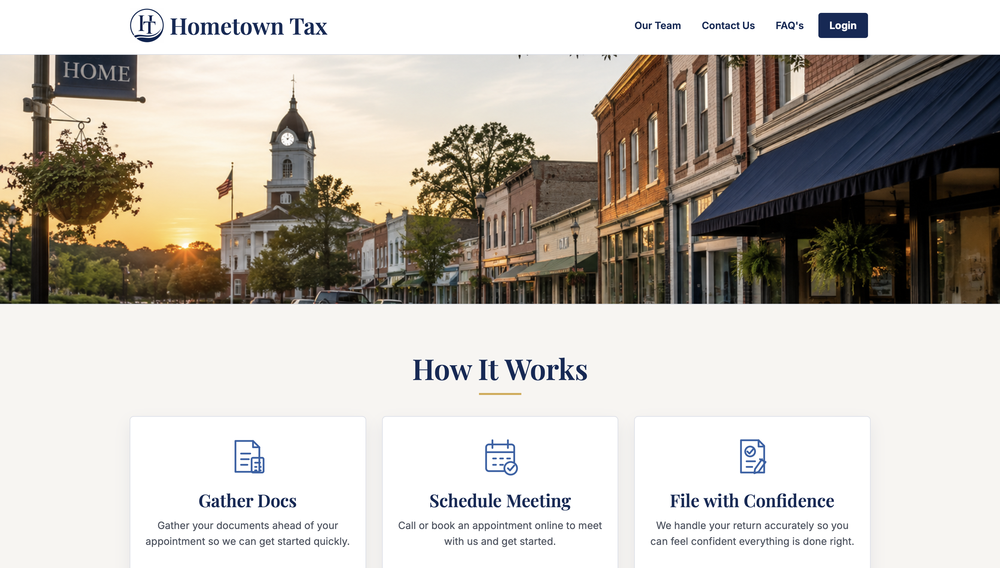
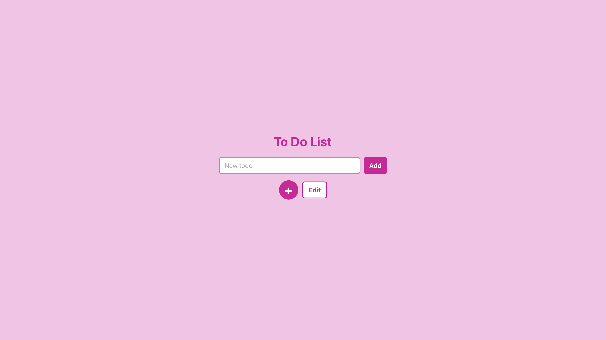

CSCE 242 Web Applications
A course portfolio page that organizes web development assignments and highlights HTML, CSS, layout, and JavaScript practice.
View Live PageA web development portfolio featuring frontend designs, full-stack projects, and coursework built with HTML, CSS, JavaScript, Node.js, and MongoDB.
About
I'm a senior at the University of South Carolina studying Computer Information Systems with a minor in Business Information Management. I enjoy building websites, solving problems, and learning how technology can make everyday experiences better.
Most of my experience is with HTML, CSS, Java, and JavaScript, and my recent projects have helped me explore Node.js, MongoDB, and responsive design. What I like most about development is taking an idea and turning it into something real that people can interact with and use.
Right now, I'm focused on continuing to grow as a developer and gaining hands-on experience that will help me build a career in tech.
Skills
Projects
I've highlighted my top four projects that demonstrate a range of frontend and backend skills, from layout and design to interactivity and API integration. Below you'll find a brief overview of each project.

A course portfolio page that organizes web development assignments and highlights HTML, CSS, layout, and JavaScript practice.
View Live Page
A tax business website built with Node.js, client login functionality, and an integrated Cal scheduling system for booking appointments.
View Live PageA clean weather interface that displays current conditions, forecast details, and location-based results.

A todo app that combines frontend interaction with a Node.js backend and MongoDB database to add, edit, and manage tasks.
View Live PageResume
My resume includes my web development coursework, technical skills, project experience, and the tools I have used to build responsive frontend and full-stack applications.